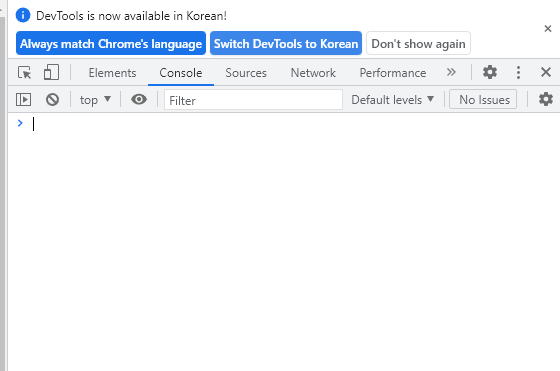

HMTL5 기본 용어
태그(tag), 요소(element), 속성(attribute)
태그(요소와 구분X) = 제목,본분,이미지 등을 모두 요소라고 하는데 이것을 만들때 사용하는 작성방법
<h2> << 시작태그 </h2> << 끝태그
<h1 title(속성이름)="header"(속성값)></h1>
<img src(속성이름)="image.png"(속성값)>
<!-- --> << 주석 : 코드가 많아지면 무슨 목적으로 작성한 코드인지 모르니 어떤 기능을 하는지 기록
페이지 구조와 작성법
스타일시트 작성 방법
1. head태그에 <style></style> 작성
2. head태그에 <link rel="stylesheet" href="">작성 후 href에 파일 이름을 적어 외부 스타일시트 불러오기
자바스크립트 작성 방법
1. head태그에 <script></script> 작성
2. head태그에 <script src=""></script>작성 후 src에 자바스크립트 파일 이름 적어주기
오류와 검증

정상적으로 프로그램이 자동하지 않을때 확인하는 방법? console창에서 확인
elements에서 HTML 페이지의 계층 구조와 태그에 적용된 스타일 확인 가능